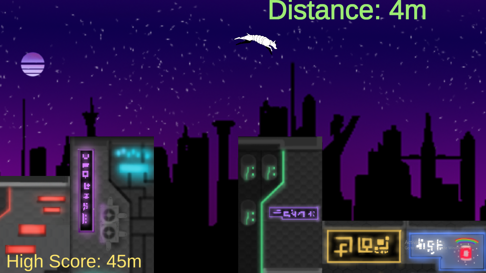

Infinite Platformer, Developed by a team of 6, Majority 1st Years. This project was part of the AGDS Mid-Term Game Jam
Designer: Helped design backstory and gameplay mechanics.
I was guided by a 4th year Design student at the time as an introduction to Game Jams and Quick-Design.
Click the image to be redirected to the Project Itch Page.
